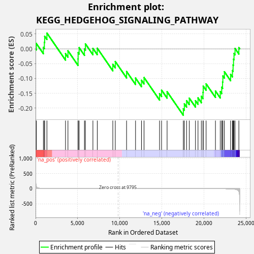
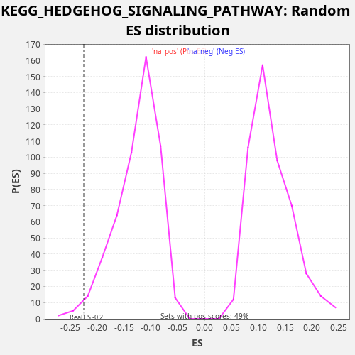

| Dataset | LabCL |
| Phenotype | NoPhenotypeAvailable |
| Upregulated in class | na_neg |
| GeneSet | KEGG_HEDGEHOG_SIGNALING_PATHWAY |
| Enrichment Score (ES) | -0.22410943 |
| Normalized Enrichment Score (NES) | -1.7880061 |
| Nominal p-value | 0.017716536 |
| FDR q-value | 0.10201917 |
| FWER p-Value | 0.76 |

| SYMBOL | RANK IN GENE LIST | RANK METRIC SCORE | RUNNING ES | CORE ENRICHMENT | |
|---|---|---|---|---|---|
| 1 | LRP2 | 91 | 73.343 | 0.0180 | No |
| 2 | GAS1 | 929 | 5.019 | 0.0051 | No |
| 3 | BMP4 | 1045 | 4.144 | 0.0221 | No |
| 4 | WNT6 | 1081 | 3.903 | 0.0424 | No |
| 5 | PRKACB | 1349 | 2.587 | 0.0531 | No |
| 6 | BMP8A | 3556 | 0.322 | -0.0163 | No |
| 7 | WNT5A | 3847 | 0.260 | -0.0066 | No |
| 8 | GSK3B | 5045 | 0.110 | -0.0343 | No |
| 9 | WNT4 | 5054 | 0.109 | -0.0129 | No |
| 10 | PRKX | 5174 | 0.100 | 0.0039 | No |
| 11 | RAB23 | 5804 | 0.064 | -0.0003 | No |
| 12 | WNT3 | 5917 | 0.058 | 0.0168 | No |
| 13 | CSNK1D | 6811 | 0.027 | 0.0016 | No |
| 14 | PRKACA | 7328 | 0.016 | 0.0021 | No |
| 15 | BMP5 | 9172 | 0.001 | -0.0524 | No |
| 16 | HHIP | 9466 | 0.000 | -0.0427 | No |
| 17 | GLI1 | 10807 | -0.001 | -0.0764 | No |
| 18 | PTCH1 | 11871 | -0.006 | -0.0986 | No |
| 19 | CSNK1G2 | 12577 | -0.012 | -0.1060 | No |
| 20 | ZIC2 | 12881 | -0.015 | -0.0967 | No |
| 21 | CSNK1G1 | 14724 | -0.055 | -0.1511 | No |
| 22 | CSNK1G3 | 14962 | -0.064 | -0.1392 | No |
| 23 | BMP8B | 15619 | -0.088 | -0.1446 | No |
| 24 | WNT9A | 17545 | -0.216 | -0.2024 | Yes |
| 25 | FBXW11 | 17665 | -0.229 | -0.1855 | Yes |
| 26 | WNT10A | 17933 | -0.258 | -0.1748 | Yes |
| 27 | WNT5B | 18254 | -0.299 | -0.1663 | Yes |
| 28 | STK36 | 18988 | -0.415 | -0.1749 | Yes |
| 29 | GLI2 | 19289 | -0.480 | -0.1655 | Yes |
| 30 | WNT10B | 19684 | -0.575 | -0.1601 | Yes |
| 31 | BTRC | 19881 | -0.626 | -0.1464 | Yes |
| 32 | WNT11 | 19907 | -0.634 | -0.1257 | Yes |
| 33 | SUFU | 20251 | -0.755 | -0.1182 | Yes |
| 34 | WNT2B | 21360 | -1.388 | -0.1422 | Yes |
| 35 | CSNK1A1 | 21933 | -2.084 | -0.1441 | Yes |
| 36 | WNT7B | 22103 | -2.387 | -0.1294 | Yes |
| 37 | BMP7 | 22207 | -2.600 | -0.1119 | Yes |
| 38 | SHH | 22239 | -2.675 | -0.0914 | Yes |
| 39 | PTCH2 | 22422 | -3.239 | -0.0772 | Yes |
| 40 | WNT7A | 23160 | -7.744 | -0.0859 | Yes |
| 41 | BMP2 | 23376 | -11.212 | -0.0731 | Yes |
| 42 | GLI3 | 23453 | -12.823 | -0.0545 | Yes |
| 43 | CSNK1E | 23504 | -13.637 | -0.0348 | Yes |
| 44 | BMP6 | 23564 | -15.301 | -0.0155 | Yes |
| 45 | WNT16 | 23684 | -20.493 | 0.0013 | Yes |
| 46 | SMO | 24139 | -95.215 | 0.0043 | Yes |

{kind=link}
{kind=link}